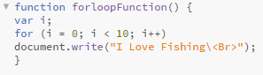
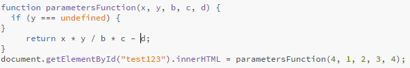
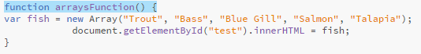

Loops run the same code over and over again, each time with a different value.
JavaScript supports different kinds of loops:
Below is the script for a sample of how for loops work. Click the "Click Me" button to see what happens when the code below is executed
Conditional statements are used to perform different actions based on different conditions
In JavaScript we have the following conditional statements:
Below is the script for a sample of how conditional statements work. As you can see I have to statments with condtions. The first one is conditional what time in the day it is. If it before noon, certain text is displayed. If it is after noon other text is diplayed. I also did a conditional statment for which day of the week it is before Wednesday certain text is diplayed. If it is after wednesday other text is displayed. If it is before is created with the types of fish. Click the "Click Me" button to see what happens when the code below is executed

A JavaScript function is a block of code designed to perform a particular task.
A JavaScript function is executed when "something" invokes it (calls it).
Function parameters are the names listed in the function definition.
Below is the script for a sample of how parameters work. As you can see in the script we are setting the paramaters for A, B, C, D, E. We are giving each of those a value and then doing a math equation using the parameters set. Click the "Click Me" button to see what happens when the code below is executed
The Answer to the above script using the parameters assinged is:
JavaScript arrays are used to store multiple values in a single variable.
Below is the script for a sample of how Arrays work. As you can see an array is created with the types of fish. Click the "Click Me" button to see what happens when the code below is executed
JavaScript arrays are used to store multiple values in a single variable.